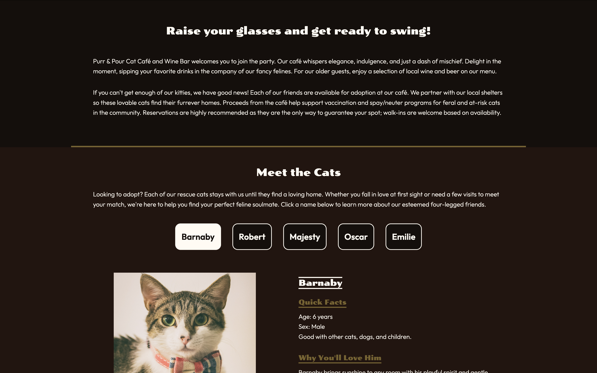
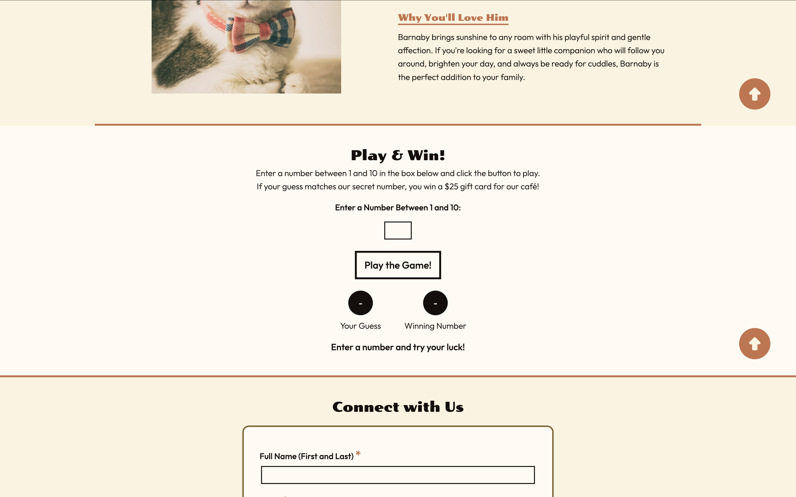
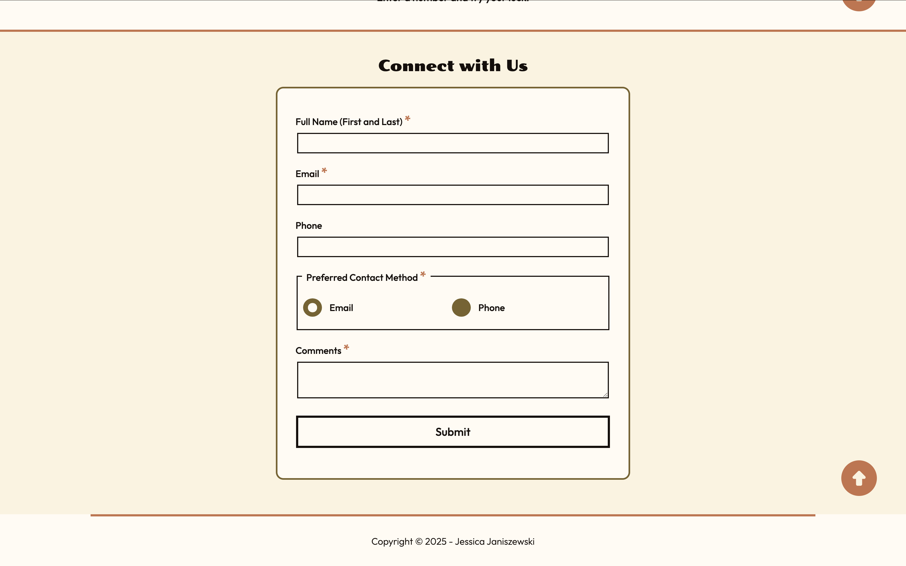

Project Overview
Objective
Design and develop a fully functional, single-page website using HTML, CSS, and JavaScript that simulates a real-world business site. The project focused on combining structured front-end development with interactive features, including dynamic content, form validation, and user-controlled display modes.
My Role
Designer and developer responsible for UI design, coding, and testing. Ensured clean structure, interactivity, and standards compliance.
Tools
Figma, HTML5, CSS, Visual Studio Code, GitHub, browser developer tools (Chrome, Firefox, Safari/Edge) for testing and validation.
Deliverables
Single-page website with fixed-width layout, light/dark mode toggle, interactive display and game feature, and contact form with custom JavaScript validation.
Project Links
Process
Approach
- Concept Development: Defined site purpose and content strategy based on project requirements and selected a brand concept to guide visual and functional decisions.
- UI Design: Created structured layouts and visual direction, including color systems that support both light and dark modes and ensure accessibility.
- Front-End Development: Built semantic HTML structure and styled the interface with CSS, focusing on layout consistency, visual hierarchy, and user experience.
- JavaScript Functionality: Implemented interactive features including light/dark mode toggle, display system, game logic, and form validation using event handling and DOM manipulation.
- Testing & Refinement: Validated HTML/CSS, tested across browsers, debugged JavaScript, and refined user interactions to ensure smooth performance and error-free functionality.
Visuals
Project Screenshots




Results
Outcomes
- Delivered a fully interactive, single-page website with dynamic JavaScript features and clean, standards-compliant code.
- Improved user experience through accessible form validation, clear feedback messaging, and interactive content elements.
- Demonstrated front-end development skills, including layout design, interactivity, and debugging across environments.